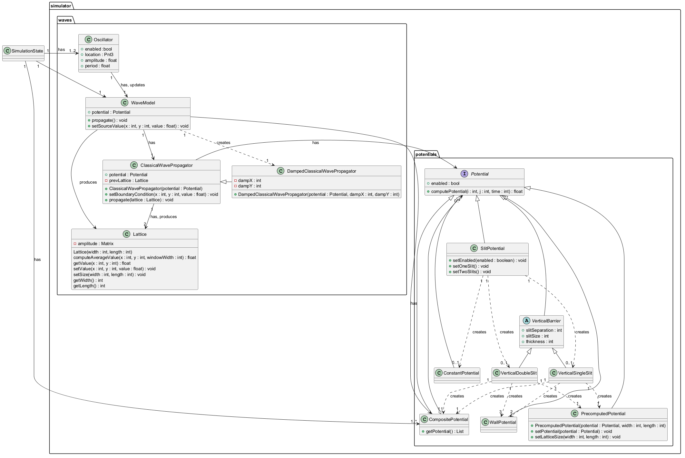

@startuml
class SimulationState
package simulator {
package potentials {
interface Potential
Potential : +computePotential(i : int, j : int, time : int) : float
Potential : +enabled : bool
class CompositePotential
CompositePotential : +getPotential() : List
class SlitPotential
SlitPotential : +setEnabled(enabled : boolean) : void
SlitPotential : +setOneSlit() : void
SlitPotential : +setTwoSlits() : void
class WallPotential
class VerticalSingleSlit
VerticalSingleSlit "1" ..> "1" CompositePotential : creates
VerticalSingleSlit "1" ..> "2" WallPotential : creates
class VerticalDoubleSlit
VerticalDoubleSlit "1" ..> "1" CompositePotential : creates
VerticalDoubleSlit "1" ..> "3" WallPotential : creates
class PrecomputedPotential
PrecomputedPotential : +PrecomputedPotential(potential : Potential, width : int, length : int)
PrecomputedPotential : +setPotential(potential : Potential) : void
PrecomputedPotential : +setLatticeSize(width : int, length : int) : void
VerticalSingleSlit "1" ..> "1" PrecomputedPotential : creates
VerticalDoubleSlit "1" ..> "1" PrecomputedPotential : creates
class ConstantPotential
SlitPotential "1" ...> "0..1" ConstantPotential : creates
SlitPotential "1" ...> "0..1" VerticalSingleSlit : creates
SlitPotential "1" ...> "0..1" VerticalDoubleSlit : creates
SimulationState "1" --> "1..*" CompositePotential : has
abstract class VerticalBarrier
Potential <|-- VerticalBarrier
VerticalBarrier : +slitSeparation : int
VerticalBarrier : +slitSize : int
VerticalBarrier : +thickness : int
VerticalBarrier <|-- VerticalSingleSlit
VerticalBarrier <|-- VerticalDoubleSlit
Potential <|- CompositePotential
Potential "0..*" <--o "1" CompositePotential
Potential <|-- PrecomputedPotential
Potential <|-- WallPotential
Potential <|-- SlitPotential
Potential <|-- ConstantPotential
}
package waves {
class Oscillator
SimulationState "1" -> "1..2" Oscillator : has
Oscillator : +enabled :bool
Oscillator : +location : Pnt3
Oscillator : +amplitude : float
Oscillator : +period : float
class WaveModel
WaveModel : +potential : Potential
WaveModel : +propagate() : void
WaveModel : +setSourceValue(x : int, y : int, value : float) : void
SimulationState "1" -> "1" WaveModel
class Lattice
Lattice : -amplitude : Matrix
Lattice : Lattice(width : int, length : int)
Lattice : computeAverageValue(x : int, y : int, windowWidth : int) : float
Lattice : getValue(x : int, y : int) : float
Lattice : setValue(x : int, y : int, value : float) : void
Lattice : setSize(width : int, length : int) : void
Lattice : getWidth() : int
Lattice : getLength() : int
WaveModel --> CompositePotential : has
Oscillator "1" --> "1" WaveModel : has, updates
WaveModel -> Lattice : produces
class ClassicalWavePropagator
ClassicalWavePropagator : +potential : Potential
ClassicalWavePropagator : -prevLattice : Lattice
ClassicalWavePropagator : +ClassicalWavePropagator(potential : Potential)
ClassicalWavePropagator : +setBoundaryCondition(x : int, y : int, value : float) : void
ClassicalWavePropagator : +propagate(lattice : Lattice) : void
class DampedClassicalWavePropagator
DampedClassicalWavePropagator : -dampX : int
DampedClassicalWavePropagator : -dampY : int
DampedClassicalWavePropagator : +DampedClassicalWavePropagator(potential : Potential, dampX : int, dampY : int)
WaveModel "1" --> "1" ClassicalWavePropagator : has
WaveModel "1" ..> "1" DampedClassicalWavePropagator : creates
ClassicalWavePropagator "1" --> "2" Lattice : has, produces
ClassicalWavePropagator -> Potential : has
ClassicalWavePropagator <|- DampedClassicalWavePropagator
}
}
@enduml